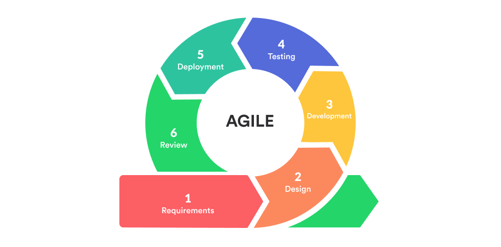
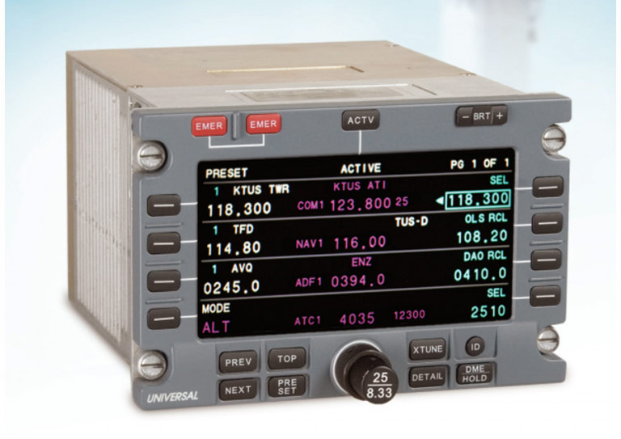
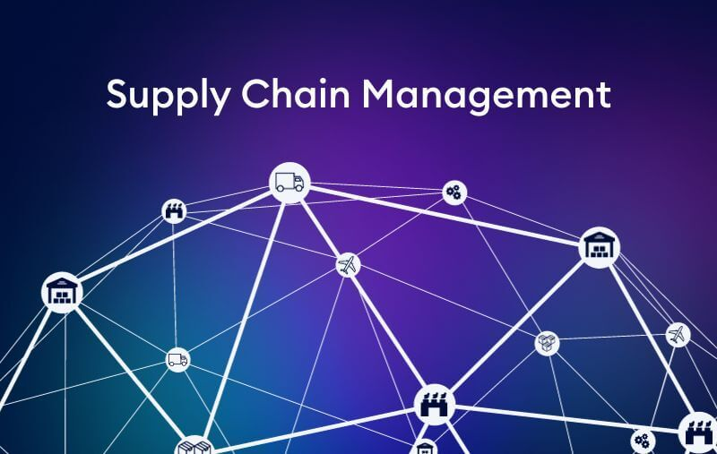
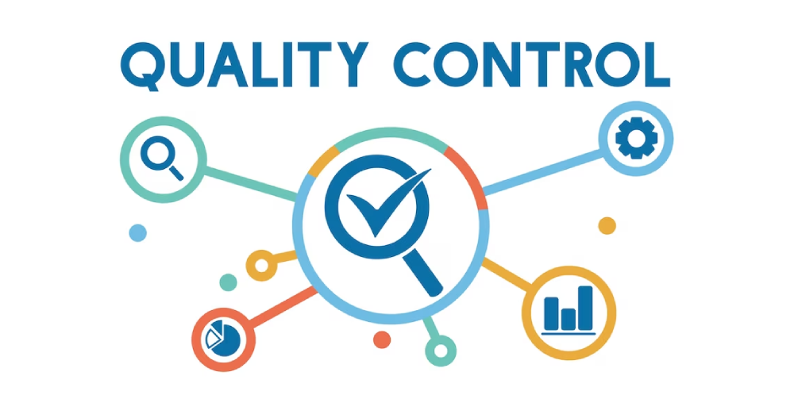
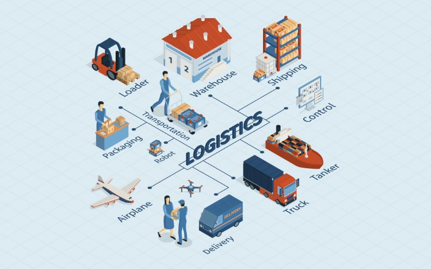
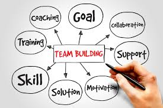
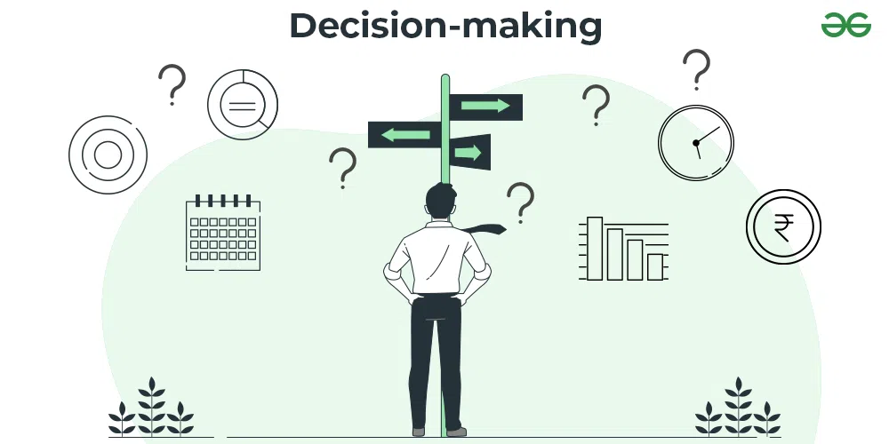
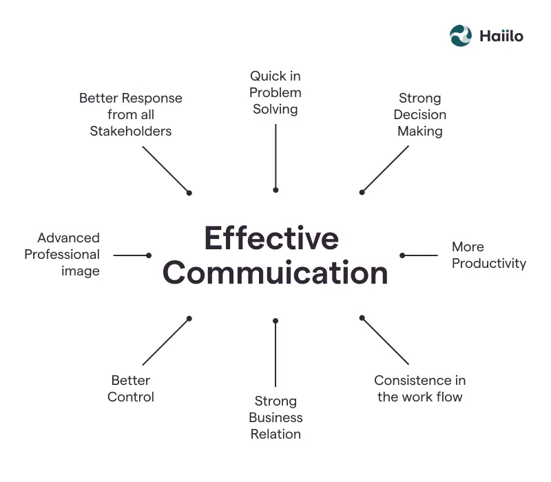

Computer Science
Computer Science is a dynamic and rapidly evolving field that encompasses a wide range of topics and skills. During my studies, I have gained exprience in the following areas:
Software Development
 Software development is a critical component of Computer Science, involving the planning and creation of software applications. I have experience in designing software systems, including defining requirements, creating UML diagrams, and developing software architecture. I have a personal interest in the Agile methodology and have been personally studying these fundamentals, as they align directly with my philosophy regarding software development.
Object-Oriented Programming (OOP)
 Object-oriented programming is a programming paradigm based on the concept of "objects," which can
contain data and code to manipulate that data.
I have experience in object-oriented programming languages like Java and Python, and have used OOP
principles to design software. I prefer this approach
to programming as it allows for more modular, maintainable, and scalable code. It is also easy for
outside developers to understand and work with. For more more
information on my Object Oriented Programming, check out Intro to
Object Oriented Programming
Object-oriented programming is a programming paradigm based on the concept of "objects," which can
contain data and code to manipulate that data.
I have experience in object-oriented programming languages like Java and Python, and have used OOP
principles to design software. I prefer this approach
to programming as it allows for more modular, maintainable, and scalable code. It is also easy for
outside developers to understand and work with. For more more
information on my Object Oriented Programming, check out Intro to
Object Oriented Programming
Machine Learning
 Machine learning is a subset of artificial intelligence that focuses on the development of
algorithms that allow computers to learn from and make predictions based on data.
I have experience in deploying machine learning algorithms for tasks such as statistical analysis,
pattern recognition, and predictive modeling. Using python and libraries like
Scikit-learn, I have been able to develop and deploy machine learning models. For more information
on Machine Learning, check out Intro to
Machine Learning
Machine learning is a subset of artificial intelligence that focuses on the development of
algorithms that allow computers to learn from and make predictions based on data.
I have experience in deploying machine learning algorithms for tasks such as statistical analysis,
pattern recognition, and predictive modeling. Using python and libraries like
Scikit-learn, I have been able to develop and deploy machine learning models. For more information
on Machine Learning, check out Intro to
Machine Learning
Programming Languages
-
Java
-
Python
-
SQL
-
HTML/CSS
Avionics
Avionics is a field that combines aviation and electronics to create aircraft systems that provide critical information to pilots and crew. During my time in the Marine Corps, I worked as an Avionics Technician, where I gained experience in the following areas:
Electrical Systems
Avionics systems rely on complex electrical systems to function properly. I have experience in troubleshooting and repairing electrical systems on aircraft, including wiring, connectors, and power distribution systems. I have a strong understanding of electrical theory and have applied this knowledge to maintain avionics systems in optimal condition.
Communication Systems
 Communication systems are essential for safe and efficient flight operations. I have experience in maintaining and repairing communication systems on aircraft, including radios, antennas, and transponders. I have worked with a variety of communication technologies and have a strong understanding of how these systems operate.
Navigation Systems
 Navigation systems provide critical information to pilots, including position, altitude, and
heading. I have experience in maintaining and calibrating navigation
systems on aircraft, including GPS, inertial navigation, and flight management systems. I have a
strong understanding of how these systems work
and have used this knowledge to ensure accurate and reliable navigation data.
Navigation systems provide critical information to pilots, including position, altitude, and
heading. I have experience in maintaining and calibrating navigation
systems on aircraft, including GPS, inertial navigation, and flight management systems. I have a
strong understanding of how these systems work
and have used this knowledge to ensure accurate and reliable navigation data.
Production Management
Production management is the process of planning, organizing, and controlling the production of goods and services. During my time in the Marine Corps, I gained experience in production management through the following areas:
Supply Chain Management
 Supply chain management involves the coordination of production, inventory, and distribution to ensure that products are delivered to customers in a timely manner. I have experience in managing supply chains for aircraft maintenance operations, including coordinating the delivery of parts and materials to maintenance facilities. I have a strong understanding of supply chain principles and have used this knowledge to optimize production processes.
Quality Control
 Quality control is the process of ensuring that products meet the required standards of quality and reliability. I have experience in implementing quality control processes for aircraft maintenance operations, including inspecting and testing aircraft components to ensure they meet safety and performance requirements. I have a strong understanding of quality control principles and have used this knowledge to maintain high standards of quality in production.
Logistics
 Logistics involves the planning and coordination of resources to ensure the efficient flow of materials and products through the production process. I have experience in managing logistics for aircraft maintenance operations, including scheduling maintenance activities, coordinating the movement of aircraft, and managing inventory levels. I have a strong understanding of logistics principles and have used this knowledge to optimize production processes and reduce costs.
Leadership
Leadership is the ability to inspire and motivate others to achieve a common goal. During my time in the Marine Corps, I developed leadership skills through the following experiences:
Team Building
 Team building involves creating a positive and productive team environment where members can collaborate effectively to achieve shared goals. I have experience in leading teams of avionics technicians in aircraft maintenance operations, including assigning tasks, providing guidance and support, and resolving conflicts. I have a strong understanding of team dynamics and have used this knowledge to build cohesive and high-performing teams.
Decision Making
 Decision making is the process of evaluating options and choosing the best course of action to achieve a desired outcome. I have experience in making critical decisions in high-pressure situations, including determining maintenance priorities, allocating resources, and managing risks. I have a strong understanding of decision-making principles and have used this knowledge to make informed and effective decisions.
Communication
 Communication is the exchange of information and ideas between individuals or groups. I have experience in communicating with diverse groups of people, including technicians, pilots, and senior leadership. I have developed strong communication skills through written and verbal communication, and have used these skills to effectively convey information, build relationships, and resolve conflicts.